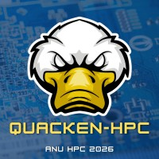

About Us
We are a passionate HPC team focused on solving complex computational problems, developing advanced technical skills, and competing at the highest level.
We are a team of ANU students driven to compete at the highest level in the Student Cluster Competition. Our goal is to design, build, and optimise a high-performance computing cluster that delivers maximum performance under strict power and cost constraints. Through rigorous benchmarking, system tuning, and teamwork, we aim to push our hardware and skills to their limits while representing ANU on the global HPC stage.
Alongside our competition efforts, we are developing a GPU-accelerated version of the IQ-TREE phylogenetic software. This project focuses on porting computationally intensive components to run efficiently on modern GPU architectures, significantly reducing runtime for large-scale evolutionary analyses. By combining parallel programming techniques with HPC optimisation strategies, we aim to make cutting-edge bioinformatics tools faster and more accessible for researchers.

Our Hardware
Our systems are engineered to balance performance, power efficiency, and scalability, enabling us to tackle demanding HPC workloads and competition benchmarks.
XENON GPU Cluster
- High-end GPU acceleration for AI & HPC workloads
- Optimised for CUDA, OpenMP, and hybrid MPI+GPU workloads
- Used for IQ-TREE GPU port and parallel compute tasks
- High memory bandwidth for large-scale simulations
Raijin Test Cluster
- Multi-node distributed system for MPI benchmarking
- Used for HPL tuning and SCC workload simulation
- Supports hybrid MPI + OpenMP configurations
- Ideal for scaling tests and network performance analysis
NCI Gadi Supercomputer
- Access to thousands of CPU cores and GPU nodes
- Used for large-scale simulations and validation runs
- SLURM-based workload scheduling environment
- Supports production-level HPC workflows
Our Sponsors
We are proud to be supported by academic and industry partners who help us develop, build, and optimise high-performance computing systems.
ANU
Leading research university supporting our team’s academic and technical development.

XENON
Provides HPC hardware, GPU systems, and industry expertise for our workloads.
We’re Looking for Sponsors
Partner with us to support student innovation in high-performance computing and gain visibility in cutting-edge engineering projects.
Sponsor Us